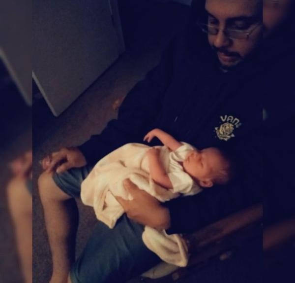

Thomas' Website
About Me

My name is Thomas Gomez. Thanks for checking out my website! I'm not so sure how common this story is but years after leaving programming and my education, I've decided to return and continue learning and creating within the world of programming. Currently the classes I'm taking are on boot.dev and I am thoroughly enjoying the experience. I'm a developer who loves creating useful things. Developing tools is very enjoyable work for me. I tend to be a bit more practical when deciding on a project to work on. I prefer to work on projects that help people or something new to challenge myself. I've worked on many projects but as of the last year have started finishing programs as executables using GUI's. I developed this website to display documentations of my work for potential employers and anyone else who appreciates the content.
What I Love About Programming
My name is Thomas Gomez. Thanks for checking out my website! I'm not so sure how common this story is but years after leaving programming and my education, I've decided to return and continue learning and creating within the world of programming. Currently the classes I'm taking are on boot.dev and ii am thoroughly enjoying the experience. I'm a developer who loves creating useful things. Developing tools is very enjoyable work for me. I tend to be a bit more practical when deciding on a project to work on. I prefer to work on projects that help people or something new to challenge myself. I've worked on many projects but as of the last year have started finishing programs as executables using GUI's. I created this website to display documentations of my work for potential employers and anyone else who appreciates the content.